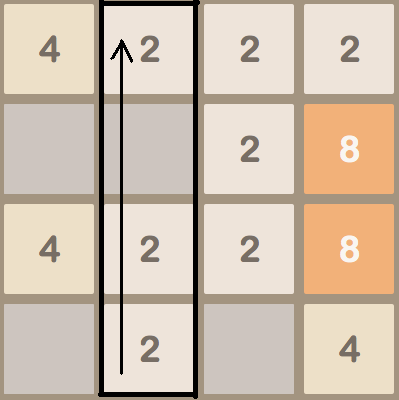
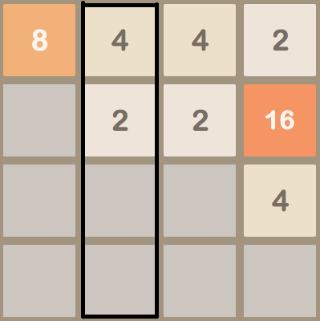

2048 (Full) Help Center
Overview
2048 is a simple grid-based numbers game. The rules of the game are described here.
For this assignment, your task is to complete the implementation of a version of the 2048 game. Since we will provide a graphical user interface for the game, your task is to implement the game logic in terms of a TwentyFortyEight class in Python. Although the original game is played on a
We have provided the following template that contains an outline of the TwentyFortyEight class. The signature (name and parameters) of the functions, classes, and methods in this file must remain unchanged, but you may add any additional functions, methods, or other code that you need to.
Testing your mini-project
As always, testing is a critical part of the process of building your mini-project. Remember you should be testing each method as you write it. Don't try to implement all of the methods and then test, You will have lots of errors that all interact in strange ways that make your program very hard to debug.
-
As you implement the
TwentyFortyEightclass, we suggest that you build your own collection of tests using thepoc_simpletestmodule that we have provided. Please review this page for an overview of the capabilities of this module. These tests can be organized into a separate test suite that you can import and run in your program as we demonstrated for Solitaire Mancala. -
Note that the template imports a file
poc_2048_guiwhich includes a GUI that we have written for playing 2048 in CodeSkulptor. This GUI is created and run by the last line of the template. (For information on how importing works, please this page.) While you are implementing theTwentyFortyEightclass, you should comment out these two lines and test each method individually using your test suite. Once your code has passed these tests, you can uncomment the two lines that import and run the GUI. You can then use this GUI to further test your code. Note: just because it seems like your game plays reasonably in the GUI does not mean that your code is correct. You can easily have subtle errors that are hard to see by casually playing the game. A common mistake students make is to play their game in the GUI for a little bit, decide it works, and then get upset that they are failing the test cases when their game "works". When you fail a test case, it means your code is incorrect and perhaps you did not encounter that situation when you were playing in the GUI or you missed a subtle mistake that was made. - Finally, submit your code (with the two lines that import and run the GUI commented out) to this Owltest page. The OwlTest page has a pale yellow background and does not submit your project to Coursera. OwlTest is just meant to allow you to test your mini-project automatically. Note that trying to debug your mini-project using the tests in OwlTest can be very tedious since they are slow and give limited feedback. Instead, we strongly suggest that you first test your program using your own test suite and the provided GUI. Programs that pass these tests are much more likely to pass the OwlTest tests.
Remember that OwlTest uses Pylint to check that you have followed the coding style guidelines for this class. Deviations from these style guidelines will result in deductions from your final score. Please read the feedback from Pylint closely. If you have questions, feel free to consult this page and the class forums.
When you are ready to submit your code to be graded formally, submit your code to the CourseraTest page for this mini-project that is linked on the main assignment page. Note that the CourseraTest page looks similar to the OwlTest page, but they are not the same! The CourseraTest page has a white background and does submit your grade to Coursera.
Phase One
You should paste your merge function from the previous mini-project into the template for this mini-project. OwlTest and CourseraTest will run the same tests on this function that were used in the previous mini-project. These tests are for informational purposes and will not be worth any points.
Phase Two
In the template, we have provided the skeleton of a TwentyFortyEight class. You should first implement the game initialization, which consist of the following methods:
-
__init__(self, grid_height, grid_width):This method takes the height and width of the grid and creates the initial 2048 board. You should store the height and width of the grid for use in other methods and then call theresetmethod to create an initial grid of the proper size. -
reset(self):This method should create a grid ofheight×width zeros and then use thenew_tilemethod to add two initial tiles. This method will be called by__init__to create the initial grid. It will also be called by the GUI to start a new game, so the point of this method is to reset any state of the game, such as the grid, so that you are ready to play again. -
new_tile(self):This method should randomly select an empty grid square (one that currently has a value of0 ) if one exists and place a new tile in that square. The new tile should have the value 2 90% of the time and the value 4 10% of the time. You should implement this by selecting a tile randomly with that proportion, not by guaranteeing that every 10th tile is a 4.
You will also need to implement the following helper methods, which will help you develop and test the above methods. Further, they are used by both the GUI and OwlTest.
-
get_grid_height(self):This method should return the height of the grid. It will be used by the GUI to determine the size of the board. -
get_grid_width(self):This method should return the width of the grid. It will be used by the GUI to determine the size of the board. -
__str__(self):This method should return a human readable string representing your 2048 board. You may format this string however you would like. This method will be helpful to you as you develop and debug your code and will be used by OwlTest to display your game board when there are errors. -
set_tile(self, row, col, value):This method should set the tile at position(row,col) in the grid tovalue. This method will be helpful to you as you test your code with different configurations and will be used by OwlTest for the same purpose. Note that the rows of the grid are indexed from top to bottom starting at zero while the columns are indexed from left to right starting at zero. -
get_tile(self, row, col):This method should return the value of the tile at position(row,col) in the grid. This method will be used by the GUI to draw the game board and by OwlTest to check your code.
You should test all of these methods as you develop them. Note, however, that your reset method will not be completely correct until after you implement the new_tile method. You can still call new_tile from reset before you implement it, it will just not add any tiles. During testing, you will want to use the set_tile method so that you can start with different board states.
Phase Three
You are now ready to implement the final method: move.
The move method is where the real logic of the game goes. This method should slide all of the tiles in the given direction. The direction argument will be one of the constants, UP, DOWN, LEFT, or RIGHT. There are many ways of implementing the move method. Here is one approach that will help you avoid writing separate pieces of code for each direction.
For each direction, we recommend pre-computing a list of the indices for the initial tiles in that direction. Initial tiles are those whose values appear first in the list passed to the merge function. For example, the initial tiles for the UP direction lie along the top row of the grid and in a [(0, 0), (0, 1), (0, 2), (0, 3)]. Since these lists of indices will be used throughout the game, we recommend computing them once in the __init__ method and then storing them in a dictionary where the keys are the direction constants (UP, DOWN, LEFT, and RIGHT).
With this dictionary computed, the move method can be implemented as follows. Given a direction, iterate over the list of initial tiles for that direction and perform the following three steps for each initial tile:
- As described in the "Grids" video, use the direction in the provided
OFFSETSdictionary to iterate over the entries of the associated row or column starting at the specified initial tile. Retrieve the tile values from those entries, and store them in a temporary list. - Use your
mergefunction to merge the tile values in this temporary list. - Iterate over the entries in the row or column again and store the merged tile values back into the grid
To illustrate this process, consider updating the state of the game via the method call move(UP) in the configuration shown below.

Following our outline above, we retrieve the list of initial tiles [(0, 0), (0, 1), (0, 2), (0, 3)] for the top row of the grid and use the direction (1, 0) associated with UP to iterate over the grid indices for each column. For the second column, these indices are [(0, 1), (1, 1), (2, 1), (3, 1)]. Using these indices, we can create a temporary list [2, 0, 2, 2] that holds the tile values in this column, apply merge to compute the merged list [4, 2, 0, 0], and finally copy the new merged tile values back into the grid. This sequence of operations yields the grid shown below.

If you have done this correctly, a single call to the move method should slide all of the tiles in the given direction. All that remains is that you must determine if any tiles have moved. You can easily do this when you put the line back into the grid. For each element, check if it has changed and keep track of whether any tiles have changed. If so, you should add a new tile to the grid, by calling your new_tile method. Now, you are ready to run the GUI and play 2048!
Note that you have not written any logic at this point to determine whether the user has "won" or "lost" the game. This is not required for this assignment, but you can think about how to do so and add it if you would like.
Last Modified Fri 29 May 2015 8:37 PM PDT